コスチュームシステム
コスチュームの仕様コスチューム分解
クレスト装着
コスチュームの仕様
| ノーマル [N] | レア [R] | ユニーク [U] | プレミアム [P] | ハルヒコラボSOS団[Plus] | |
|---|---|---|---|---|---|
| 入手方法 | 神秘石3個+10万Gで デザイナーユノ より購入 |
盗掘王の秘宝より出現 | 課金アイテム | ハルヒコラボ | |
| 色 | 固定1色 | 初回使用時に 6色から選択 |
固定1色 | ||
| 固有オプション | - | すべての能力値 +20 追加経験値獲得 +10％ |
すべての能力値 +100 追加経験値獲得 +20％ |
||
| 付加オプション | 5個 （赤色2個 / 青色2個 / 金色1個） |
6個 （赤色2個 / 青色2個 /金色2個） |
|||
| 有効期間 | 2日 | 永久 | |||
| 分解 | 不可 | 可能 | |||
| 取引 | 不可 | コスチューム保管ボックスに保管することで取引可能 | |||
| 装備条件 | Lv1以上 各職業専用 | ||||
職業別コスチュームの一覧は ⇒ コスチューム一覧
| 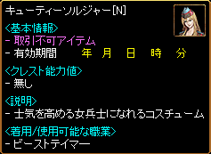 |
ノーマルコスチュームは |
| 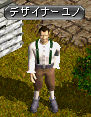 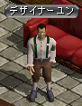 |
古都ブルンネンシュティグ デザイナーユノ（102.51）または、冒険家協会ブルンネンシュティグ本部 デザイナーユン（56.13）より |
| 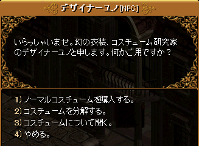 |
|
| 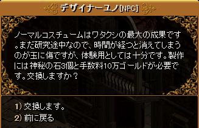 |
神秘石3個+10万Gで購入できる |
| 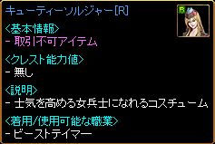 |
レア/ユニークコスチュームは 盗掘王の秘宝より出現 |
| 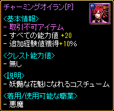 | プレミアムコスチュームは課金アイテム 1500GEM |
コスチューム分解
| 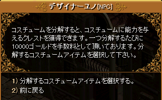 |
レア/ユニーク/プレミアムコスチュームは デザイナーユノまたはデザイナーユンにて 1万Gで分解することができる。 |
| 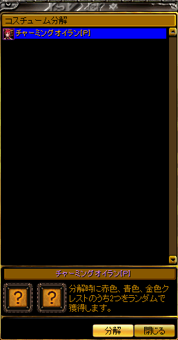 |
分解したいコスチュームを選択 |
| 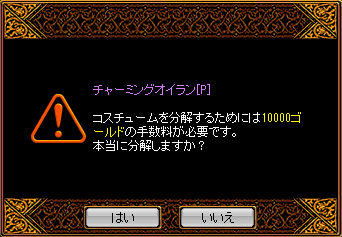 |
|
| 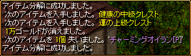 |
コスチュームを分解すると、赤色/青色/金色のクレストをランダムで2個獲得。 |
 |
クレストは性能により 下級/中級/上級/最上級/超級?/超級? の6種類がある。 |
| クレストの種類 | ||||||
|---|---|---|---|---|---|---|
| 下級 | 中級 | 上級 | 最上級 | 超級? | 超級? | |
| 入手方法 | 盗掘王の秘宝 レアコスチューム分解 |
レア/ユニーク/プレミアム コスチューム分解 |
上級クレストから合成 | キャンペーン限定 | ||
| 赤色 攻撃系 |
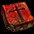 | 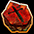 | ||||
| 青色 防御系 |
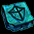 | 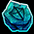 | ||||
| 金色 ステータス |
||||||
クレストのオプション効果例
| クレスト | オプション効果 | |
|---|---|---|
| PVP攻撃力の下級クレスト | PVP時に攻撃力増加+3~8％ | |
| PVP攻撃力の中級クレスト | PVP時に攻撃力増加+9~14％ | |
| PVP攻撃力の上級クレスト | PVP時に攻撃力増加+15~20％ | |
| PVP攻撃力の最上級クレスト | PVP時に攻撃力増加+21~26％ | |
| PVP攻撃力の超級クレスト? | PVP時に攻撃力増加+35％ | |
| PVP攻撃力の超級クレスト? | PVP時に攻撃力増加+45％ |
オプション効果の一覧は ⇒ クレスト
クレスト装着
| 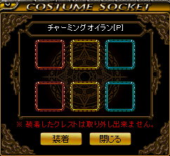 |
クレストをコスチュームに装着するには、 コスチュームを右クリックして ソケットウィンドウを開き、 |
| 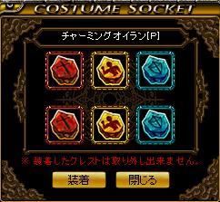 |
装着したいクレストを同色のソケットにセットし、装着ボタンをクリック。 |
| 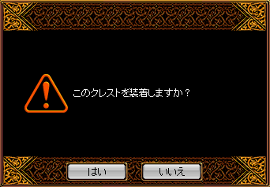 |
|
| 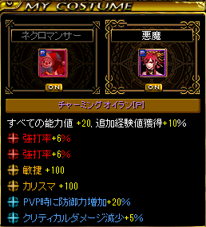 |
クレストのオプション効果が付加される。 同種のオプションを2個付加することも可能。 |
| 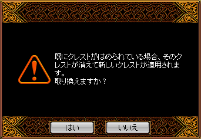 |
別のクレストに変更する場合は、 ソケットウィンドウを開き、 上書きしたいクレストをセットして 装着ボタンをクリック。 |
| 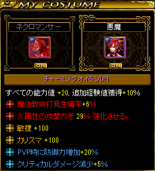 |
新たなオプション効果に上書きされる。 |
 |
装着したクレストはクレスト抽出鋏で抽出できる。 課金アイテム 300GEM 期間限定販売 取引可能 |
| 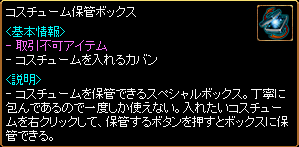 |
コスチューム保管ボックスは課金アイテム 1500GEM |
| 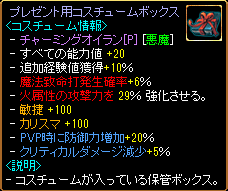 |
レア/ユニーク/プレミアムコスチュームを右クリックして保管することで取引可能になる。 プレゼント用コスチュームボックスを右クリックして使用すると、装備可能なコスチュームとなり、取引不可になる。 |
| 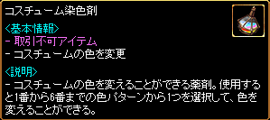 |
コスチューム染色剤は課金アイテム 200GEM |
| 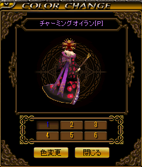 |
右クリックして使用すると色変更ウィンドウが開く。 1〜6番の色パターンを選択して、色変更をクリック。 |
| 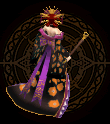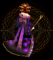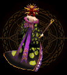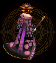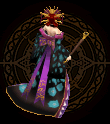 |
|
| 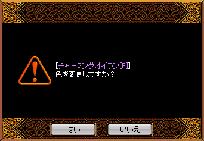 | プレミアムコスチュームの色を変更できる。 |